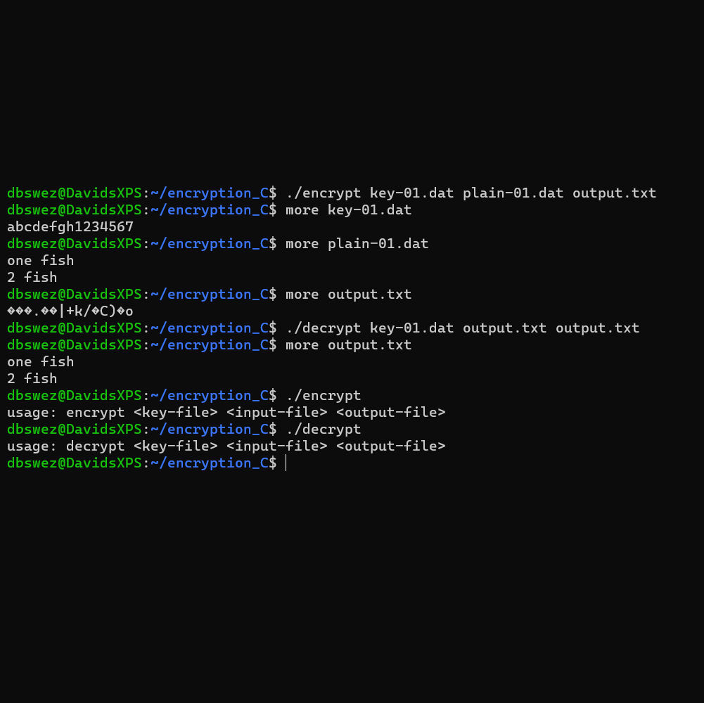
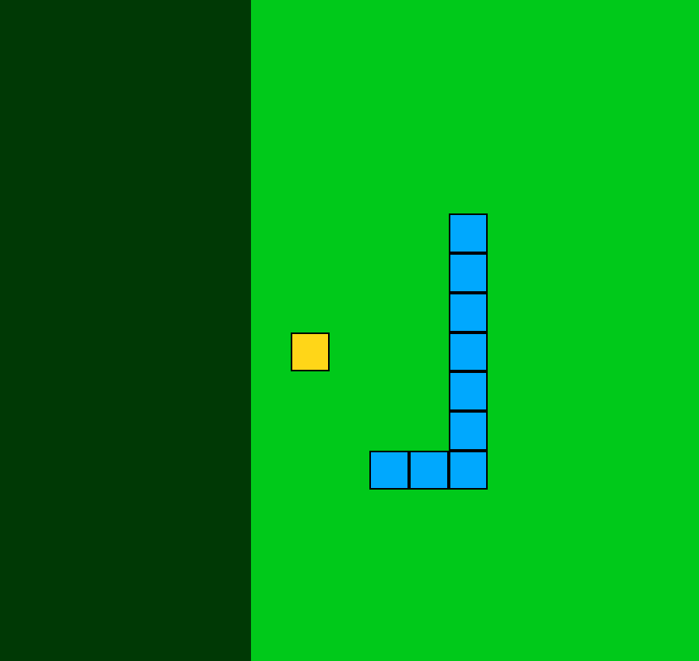
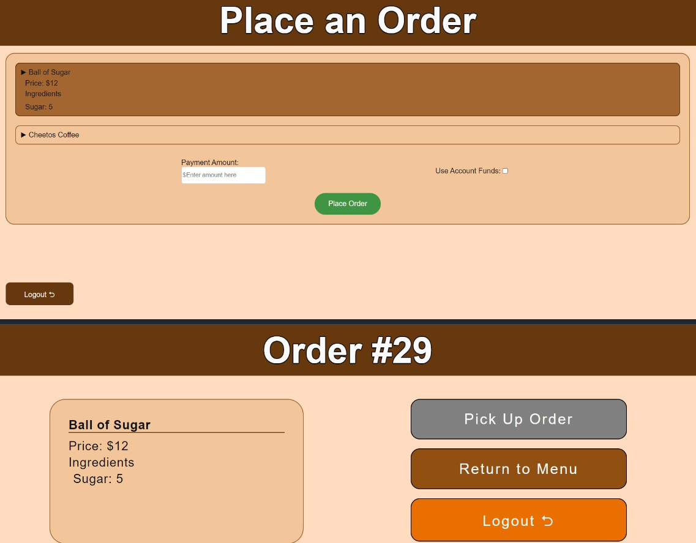
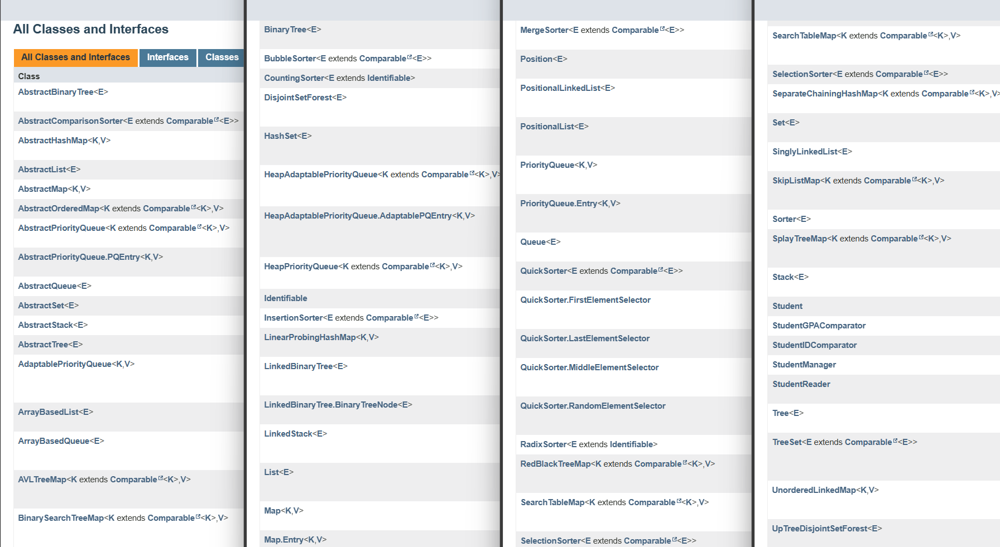
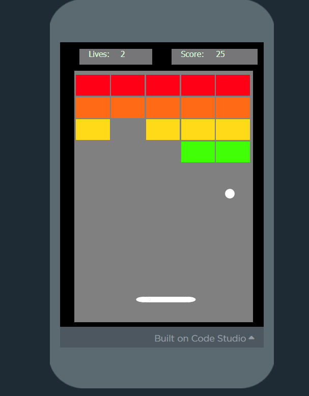
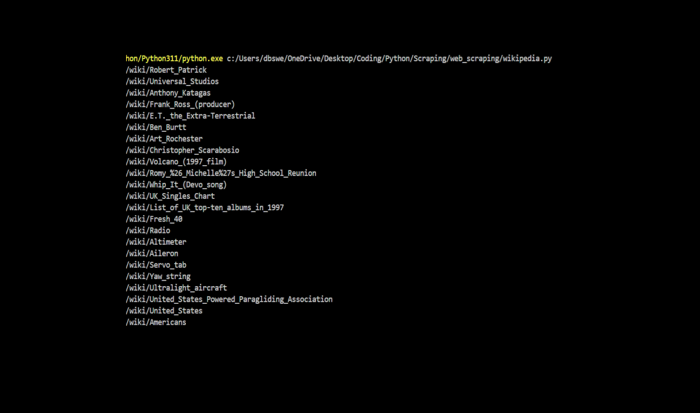

Below are several of my completed and work-in-progress projects. I have provided a GitHub link if you would like to explore further. Do not hesitate to reach out with further questions. These have been completed in several languages, including Java, C, Python, Javascript, HTML, and CSS.
|  |
An encryption and decryption software created in C. The AES algorithm is used to encrypt plaintext using a provided 16 character key, or decrypt ciphertext via the same key. It was built in Linux (WSL) and runs in Linux via the command line. See usage and installation details on Github. Github |
|
A basic implementation of the classic Snake Game using HTML, CSS, and Javascript on the back-end. The snake, a blue square, can be controlled using the arrow keys in order to collect food, the yellow blocks. As you collect food, the snake gets longer. Collect as much food as possible whilst avoiding collisions with the snake's body and the edges. Github Play |
 |
|  |
A robust software that contains role-based features and a log-in system. Staff can add inventory, create, edit, or delete coffee recipes. Users can order, pay for, and then pick up their coffee. Staff can cancel or fulfil orders. This software incorporates the popular Java frameworks Hibernate and Spring, and uses RestAPI with SQL for database manipulation. Boasts a strong frontend implemented with AngularJS. GitHub |
|
A large collection of common abstract data types and underlying data structures in Java. Additionally, contains several of the most common sorting algorithms, including quicksort. Demonstrates an understanding of space and time complexities of data structures and algorithms. GitHub |
 |
|  |
This is a brick-breaker game I built using Code.org in highschool as a part of a computer science course. It was made in Javascript, and uses the built in Code.org elements of HTML. Use arrow keys to move the bouncer to keep the ball in play. This was the first project I completed in computer science. I'd like to think I have come a long way. I plan on creating a similar game using JScript, HTML, and CSS from scratch. Play |
|
This is a small collection of web scraping projects built in Python using libraries such as urllib and BeautifulSoup4. Pictured to the right is the output of a program that traverses links on Wikipedia starting from Kevin Bacon's article (inspired from 6 degrees of Kevin Bacon.) These projects were inspired by the book Web Scraping with Python, 2nd Edition by Ryan Mitchell. GitHub |
 |